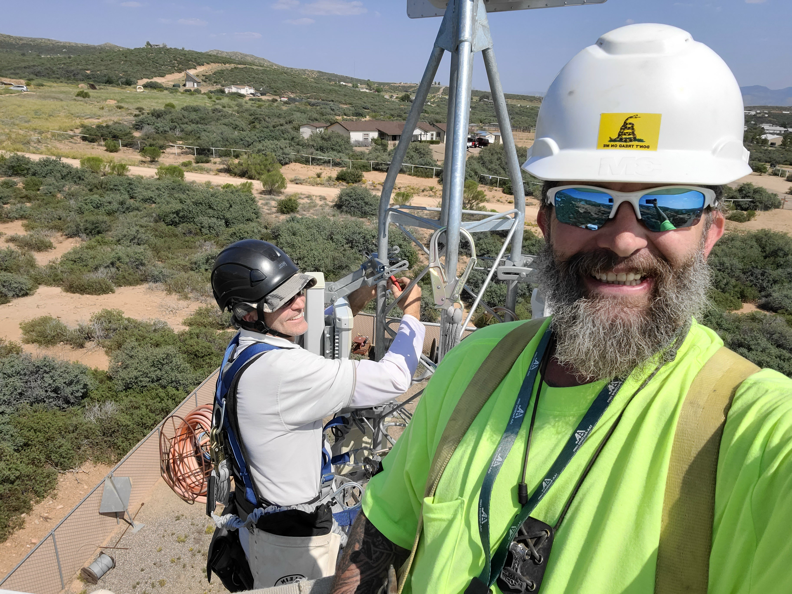

Building and securing networks in the real world
Welcome to my portfolio for the University of Advancing Technology. I'm pursuing dual bachelor's degrees in Network Engineering and Cybersecurity, building on practical experience with rural telecommunications, fixed wireless systems, fiber networks, and network infrastructure.
Boards
Explore the objectives for both degree programs and, eventually, the coursework that demonstrates them.
Explore Boards →InnovationStudent Innovation Project
Follow the development of my modular power and fiber distribution concept and its off-tower monitoring prototype.
Explore SIP →Field experienceProjects
View technical projects and professional experience that inform my approach to network design.
View projects →About me
My background is in building and maintaining communications infrastructure, from central offices and remote nodes to tower sites and fixed wireless deployments. I returned to school to expand the engineering and security knowledge behind the systems I work with every day.

Working on a tower near Dewey, Arizona.